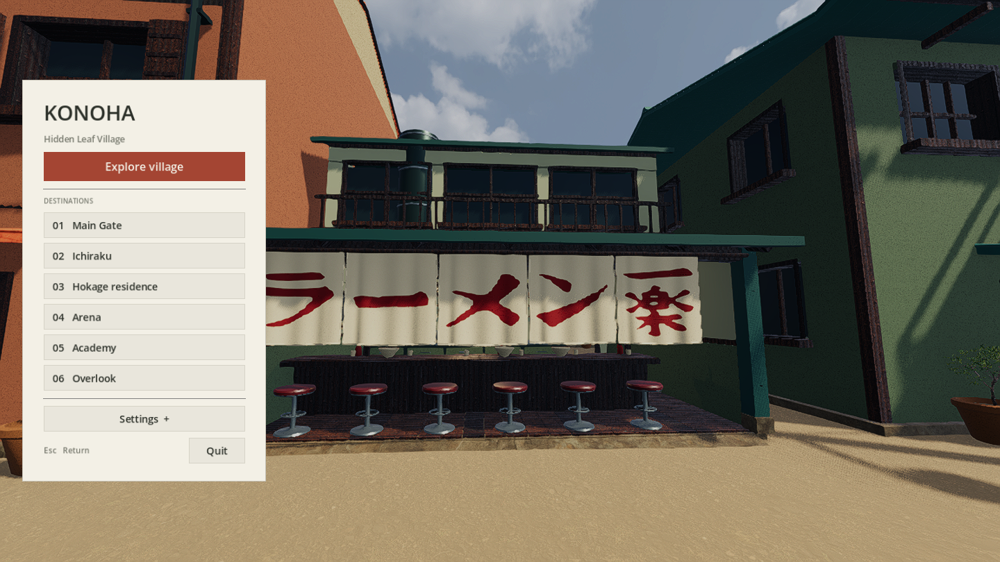
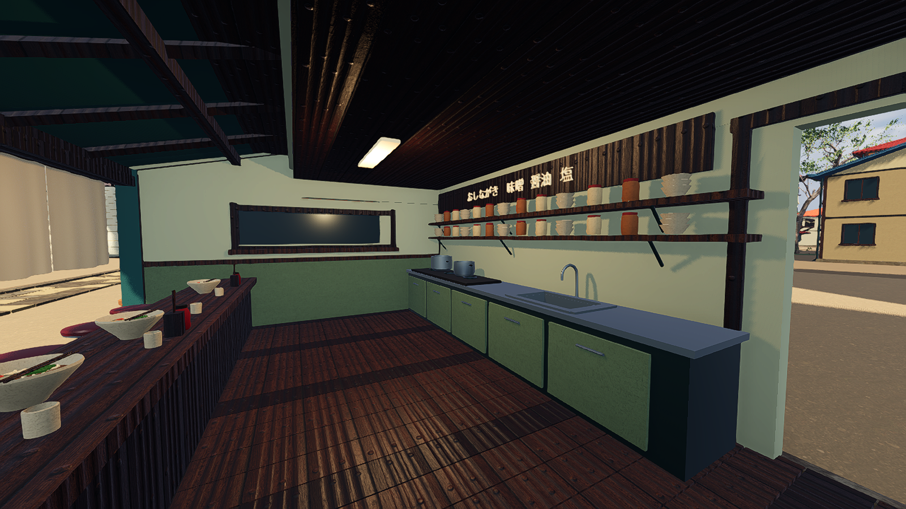

Hidden Leaf
A walkable village scene built with Godot and Blender.
Screenshots from the native app. This page does not run the game.

Six landmark shortcuts; sensitivity and graphics settings open from the menu.
Inside Ichiraku. The counter, kitchen and entrances are modeled geometry.Controls
WASD or arrow keys move. Mouse looks. Shift runs. Space jumps. Esc pauses.
Scope
A small fan environment with an approximate village layout. Most buildings have exterior geometry only; Ichiraku has an accessible interior. No characters or gameplay objectives.
The Mac download runs offline. It is ad hoc signed, without Apple notarization. Run from source.